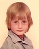
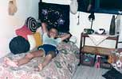
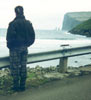
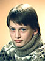
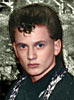
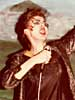
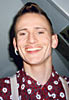

| Dennis Agerblad er en ud af tre personligheder. | ||||||
Klik på et billede for at se det større |
| Biografi |
 Som lille hed han Robin. Robin er født i Danmark og siden hen vokset op på Færøerne i bygden Vestmanna (1500 indbyggere) med sin mamma. Robin var en nervøs dreng, som helt fra lille af, led af angst. Robin skabte en hemmelig person inden i sig selv, som han kaldte Dennis Agerblad, som kun han selv kendte til. Robin følte at Dennis Agerblad var kroppens rigtige person, som forstod sig selv. Robin var det navn hans forældre havde givet ham, fordi hans far, som han sjældent så, blev kaldt Robin Hood som lille. Robin følte aldrig at der var nogen der forstod ham, eller var som ham og prøvede ihærdigt at opføre sig som man skulle for at blive accepteret og elsket. Men det gad Dennis Agerblad ikke og så var konflikten født. En konflikt som aldrig skulle løses imellem de to personer. Dennis Agerblad var modsat Robin og ville skille sig ud og farvede derfor sit hår, syede sit eget tøj, pjattede og begyndte at optage en masse sjove ting på bånd. Men når Robin så skulle ud, turde han næsten ikke vise sig med det nye hår, som Dennis Agerblad havde lavet på ham.  Det var værst da Robin kom i puberteten for det gjorde Dennis Agerblad også, som homoseksuel. Og det kunne Robin mærke og blev derfor bange for at Dennis Agerblad skulle blive opdaget og gjorde nu endnu mere for at skjule ham, ved at være den første i klassen som kyssede på pigerne. Robin blev glad hvis nogen kaldte ham for pigeglad eller en skørtejæger. Men to seksualiteter i en krop var meget kompliceret. Især fordi den dominerende Dennis Agerblad ikke fik levet sin seksualitet ud. Dennis Agerblad vidste ikke hvad homoseksualitet var, men havde hørt om kønsskifteoperationer i medierne. Og tænkte, -"øv skal jeg virkelig operere mig om, for at få en mand som vil have mig?"De to personer blev mere og mere konflikt fyldte og livet blev et mareridt. Og Robin tænkte, hvis bare han boede i Danmark så kunne han måske få en kønsskifteoperation og kalde sig for Denice.  Robin flyttede til København, men Dennis Agerblad ville ikke høre tale om Robins idéer om at blive til en pige. Jeg er Dennis Agerblad og ikke andet. Jeg vil ikke sættes i nogen bås. Jeg vil finde en som elsker mig, som jeg er. Mand, kvinde eller rummand. Men Dennis Agerblad var stadig en så ekstrem person for Robin, at de to kæmpede om pladsen i kroppen. Til sidst blev de enige om at lave en tredje person som var en blanding af de to og kaldte ham for Ova. Ova klarede sig rigtig godt. Var åben om alt, også sin homoseksualitet. Fik sig en uddannelse som tekstil designer på Danmarks Design Skole. Startede et færøsk band, som han udgav musik med. Startede et kunstnerværksted op og lavede kunst og fik også solgt billeder. Fik fast job som grafiker. Ova var glad for at han nu kunne glemme alt om Robin og hans dobbeltmoral, løgne og selvhad. Mens Dennis Agerblad nærmest blomstrede op nu,hvor der ikke var nogen Robin til at holde ham nede.Dennis Agerblad fik lov til at gå i byen, lave kunst, musik og shows. Dennis Agerblads største ønske er, at han bare kan lukke ned for Ova og være Dennis Agberblad på fuld tid. Men Ova har skabt en del relationer, som intet har med Dennis Agerblad at gøre,så det er måske aldrig muligt. |
| Lige nu er forholdet | ||||
|